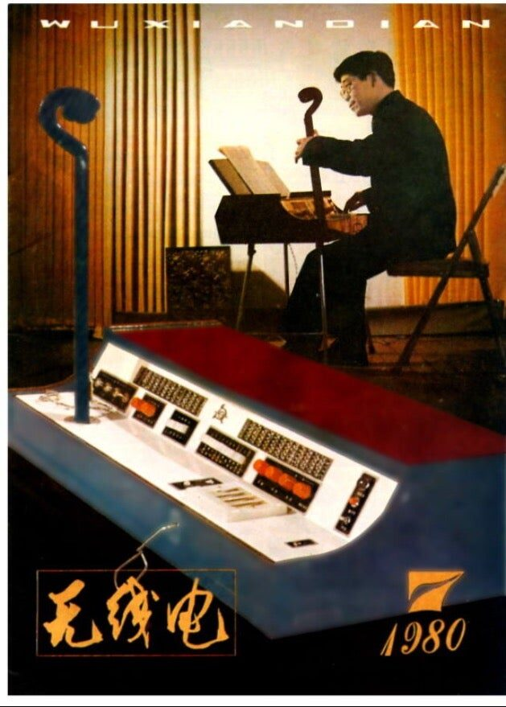
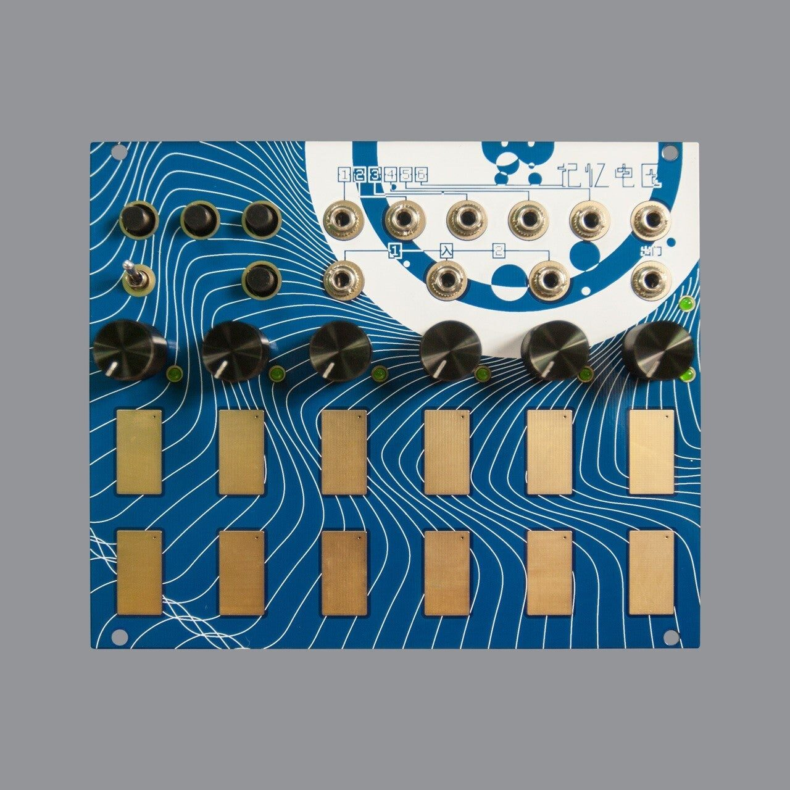
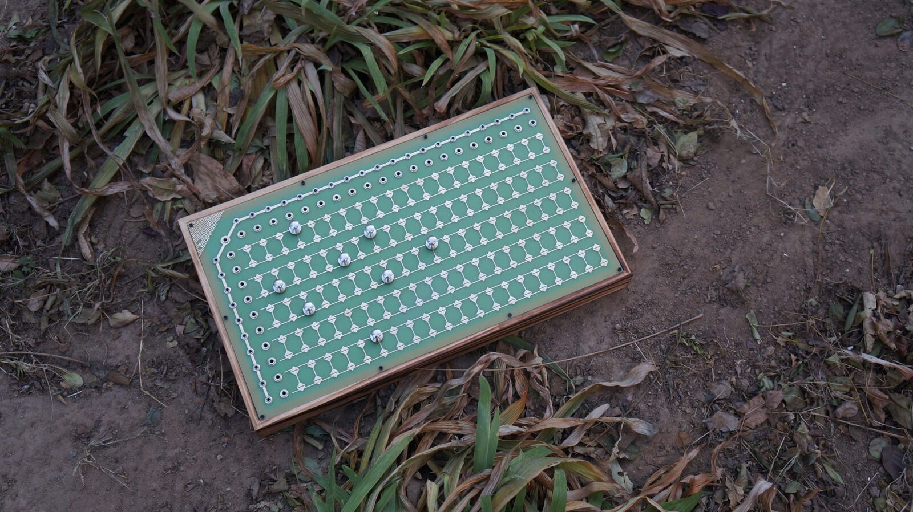
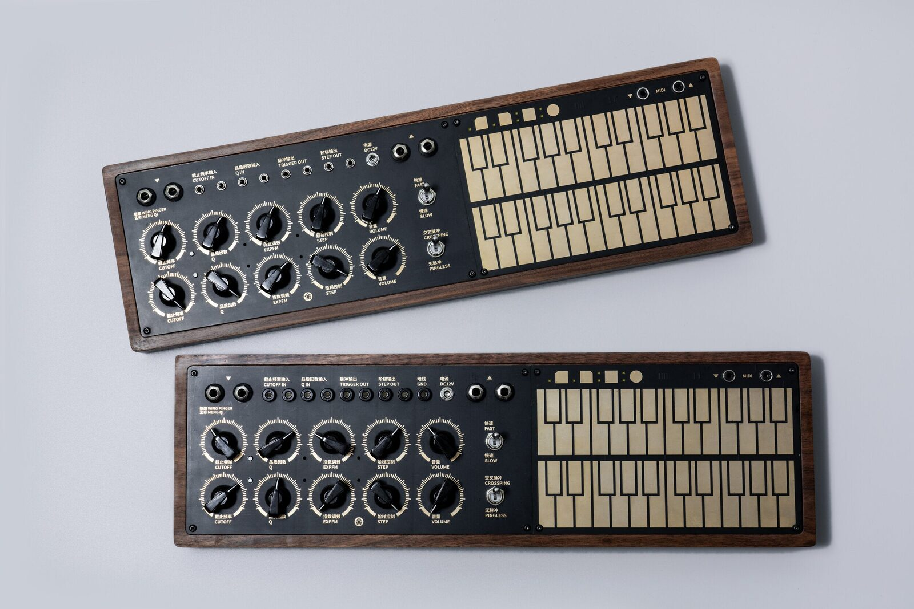
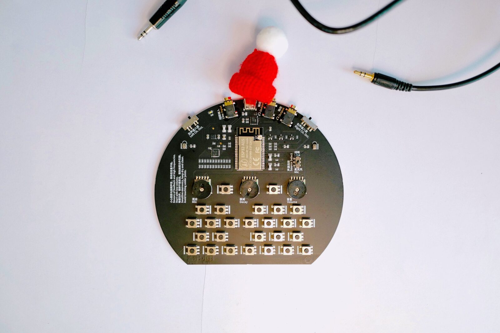

Today and Yesterday: Two Case Studies of China's NIME Community
Abstract
This article explores two in-depth interviews with distinguished Chinese NIMEers, across generations, from the late 1970s to the present. Tian Jinqin and Meng Qi represent role models in the Chinese NIME community. From the innovative NIME designers’ historical technological innovation of the 1970s’ analog ribbon control string synthesizer Xian Kong Qin to the 2020’s Wing Pinger evolving harmony synthesizer, the author shines a light from different angles on the Chinese NIME community.
Author Keywords
NIME, China, Wing Pinger, Tian Jinqin, Chinese first synthesizer
CCS Concepts
•Social and professional topics → History of computing; •Applied computing→ Sound and music computing; Human-centered computing →Sound-based input/ output;
Introduction
Limited research has been done on the Chinese NIME community and its history. According to the recent concerns and discourse related to diversity, equity, and inclusion (DEI) among the MINE community, registering, the NIME history beyond the eurocentric perspective is critical [1]. As a scholar who has worked in this field for two decades, the author was humbled to be granted the privilege to interview two distinguished NIME technologists face-to-face via Zoom and Wechat during the COVID-19 pandemic. Currently, there is no scholarly work in English has been done to reflect their work. Chinese NIME community has been thriving in recent years and documenting its history is important non-eurocentric/inclusive scholarly work to decolonize our field.
Each individual structured interview is around three hours. These interviews were conducted and recorded separately. Notes were taken during and after the interviews and then organized and translated into English. Email and Wechat message communications were also used for follow-up informal interviews. These multigenerational interviewees are 1) the first Chinese NIME designer and maker – Tian Jinqin, and 2) the contemporary iconic Chinese NIME designer and electroacoustic artist – Meng Qi. They represent different historical aspects of the Chinese NIME community from the technological perspective, the aesthetic perspective, and the sociological perspective.
From the interviewees’ personal backgrounds to historical changes in the field, from their career paths development to their aesthetic pursuits, from their innovative practices to their philosophical views, our conversations covered a broad range of topics across five decades from the late 1970s to the 2020s. Much more could be written. The goal here is to put the current situation in historical context.
The First NIME Innovator in China
Although unknown to many NIME researchers, Tian Jin Qin designed and built the first ribbon-controlled analog synthesizer that specifically can emulate Chinese traditional music instruments as well as create abstract sounds sometime between 1976 and 1978. Tian was raised by a humble family in a remote rural area in northwest China, He built his first Chinese folk string instrument called “Banhu” at the age of 12. Because of poverty and the general lack of freedom to choose one’s career path in the 1950s in China, he was sent to a trade school and received an associate degree in general engineering so he could be assigned to a random job.
At that time, all jobs were controlled and assigned by the government, Tian’s was no exception [2]. In 1956, he got a job assignment as a mine worker at Taiyuan Mining Machinery factory in Shanxi (山西) Province. There, he taught himself a four-year undergraduate physics and mathematics during his spare time. He spent almost all of his limited income to build his lab, buying electrical parts and equipment. His first successful experiment was building a crystal radio without using any external electricity. He then built a series of tube radios. Eventually, he built the ultimate advanced superheterodyne radio at that time.
After this successful self-learning experience, he plucked up the courage to ask his manager to help him make a career path change to whatever low-level job was available in a university, so he could sit in the classes and study physics. In the fifties of last century’s China, this was impossible since the mining system and higher education system were irrelevant thus the job assignment could not be made. However, his manager was moved by his passion and decided to at least provide Tian with a new job as an inventory assistant in their own physics lab in the factory. Tian then moved into the lab and treated the lab as his own home. He did countless experiments there to advance his knowledge and occasionally taught some electrical engineering classes. This was a major milestone for Tian’s career development. From then on, he was able to combine his passion for music and electrical engineering altogether and be creative experimentally.
As a huge fan of Chinese traditional acoustic instruments, it didn’t take Tian too long to find out the major shortcoming of these beautiful sounding instruments – their soft volumes. Because of this, Tian started to design and build specific circuits for amplification and filtering effects to augment these Chinese acoustic instruments’ original timbres as well as create innovative abstract timbres from them. His first experiment was augmenting a Guzheng. This was an organic innovative process without knowing what other researchers in the field were doing around the world.
In the early 1960s, this earliest augmented Guzheng research work was published in a prestigious national research journal called “Radio Magazine/ Wu Xian Dian (WXD)”. He began receiving national recognition, which provided him the opportunity to attend the National Heroes of Cultural and Educational Symposium at the Great Hall of the People in Beijing. This was another milestone in his career development as this opportunity extended his network and allowed him to connect with other scholars in the field, who provided him with invaluable international research resources for his further exploration in this area.
In 1964, Tian was re-assigned to Taiyuan Radio Electronics Research Institute as a junior electrical engineer. In 1967, he was promoted to become a senior engineer and established his own lab, where he finally fulfilled his original career dream. Tian published more than 300 audio and electrical-engineering-related research papers at WXD during the time periods of 1962 - 1966 and 1978 - 2004. Just like many other research venues were canceled during the Cultural Revolution [3], WXD was also canceled during 1966 - 1978.
During the cultural revolution, Tian isolated himself and avoided socializing so he could continue his research in electronic music instrument design. Indeed, those were very difficult ten years in his life. It was also during this period of time, that his lifetime achievement – the ribbon-controlled analog synthesizer named “Xian Kong Qin (弦控琴)” – was realized. In 1973, the China-US relations drove towards a friendly and peaceful side through the “ping-pong” diplomacy during the Nixon Administration [4]. This historical opportunity provided Tian with a few good years to focus on his innovation. Without any funding support, Tian completed his first prototype in 1978.
His astounding fretless touch interface design of using ribbon sensors on the right hand and at the same time, using traditional Chinese string music performance techniques on the left hand for simultaneously continuous control of the sonic outputs is way ahead of his time. This instrument was based on transistor technology at the time. Its second-generation, XK-2, applied integrated circuits and added timbre pre-storage and automatic accompaniment functions.
Xian Kong Qin utilizes four electric strings to control pitches on the left hand. Since it is also ribbon-controlled, it can generate continuous music expressions, such as glissando, vibrato, and intermittent scales. It uses direct waveform, ADSR, frequency division, frequency doubling, time-varying filters, and other techniques to synthesize the timbres of a broad variety of musical instruments. It realistically simulates the timbres of Chinese national orchestral instruments and Chinese folk instruments by playing on the four-string fingerboard. The four-stringed fingerboard enables the users to accurately simulate the Chinese traditional music performing techniques, such as kneading, pressing, trembling, sliding, calendar, portamento, back portamento, string pressing, and string-pulling. By adding the keyboard, patchbay, buttons, knobs, and sliders, on the other end of the control panel to simultaneously control the audio output, the users can achieve many other novel music expressions.
The renowned online NIME/music technology community cdm1 highly praised Tian’s design: “The synth is essentially two connected designs. The main synth console features organ-like push-button timbre controls and rotaries, plus four touch plates that respond both to being depressed and to continuous control vertically along the surface…It’ll make you immediately wonder why a single ribbon design is so popular, when the ability to finger multiple ribbons, fretless style, both relates to traditional instrument designs and allows more sophisticated melodic playing and expression…” [5]. Image 1 shows the design of Tian’s Xian Kong Qin and him playing the instrument, featured on the cover of WXD’s Vol.1980, No.3.


Image 1. Tian and his Xian Kong Qin design featured on the cover of the Chinese national research journal WXD in 1980
Video 1: Tian Jinqin plays the Xian Kong Qin, which imitates timbres of many Chinese and Western music instruments, sounds in nature, and creates abstract sounds. (https://youtu.be/GEW3019rMZk)
Through this prototype, Tian emulated a broad range of Chinese traditional music instruments’ timbres as well as used different electronic music techniques to design abstract sounds for film scoring and soundtracks, as demonstrated in Video 1. This is also the first Chinese synthesizer that had ever been designed and made in Chinese music history.
In 1979, Tian brought this prototype to Beijing for experts’ review. His original thoughts were to make it low-cost and broad distribution, so this instrument could be adopted by the general public and really shine for novel musical expressions. However, the music factory that was assigned to collaborate with him wanted to make a fortune out of this design. The factory upgraded the bodywork of the prototype and made it look more like a Western organ. Meanwhile, the cost became unaffordable. Because of the cost and some other political reasons that Tian would not want to dig deep into during the unusual historical period of time, only four copies of the instrument were made and distributed to the major four national film companies for film scoring.
In 1980, Tian founded China's first professional electronic musical instrument research institute in Taiyuan, Shanxi province. There, Tian continued his NIME innovations and built a series of NIMEs to promote Chinese traditional instruments and folk music. Some of these inventions include an electronic Banhu, electronic Yueqin, electronic Guzheng, and electronic Yangqin, just to name a few. He also holds 40 patents and wrote the first scholarly book on electronic music instruments’ history and music interface/sound effects design techniques in the Chinese language [6].
Although none of his brilliant inventions received commercial success or international recognition due to the political reasons stated above and the relatively closed society before the Internet era in China, Tian has been respected and known by today’s Chinese music technology community as “the father of China’s own synthesizer.”
Meng Qi: The Unity of Form and Matter in NIME
Born in Beijing in the 1980s, Mengqi has gained significant recognition since the 2010s as a Chinese pioneer NIME designer. He designed many modular synthesizers as well as gesture-controlled digital music instruments (DMI) and audio effects. In 2007, as a college dropout with an unfinished German major, he discovered his true passion for building music gadgets. He was fascinated by the endless possibilities of electroacoustic sound design. Discovering new sounds and their unexpected power to catch humans off guard has been his ultimate goal ever since.
In 2011, Meng started making electronic music instruments. Without any electrical engineering background, he self-taught himself everything, from circuit soldering and assembling to embedded coding. In 2014, he tried his hand at building Voltage Memory, which was a Eurorack analog sequencer controller, and sold about 300 units within a year. It was good-looking, multifunctional, small-sized, affordable, and easy to use. Although many modular synths nowadays are manufactured in China, this little blue box was the first China’s own Eurorack module, designed and built by a Chinese citizen. Image 2 shows the interface design of the Voltage Memory.


Image 2. Voltage Memory (2014), the first China’s own Eurorack module design product
Besides making Eurorack modules, he was more interested in making standalone DMIs. He designed and built more than 30 different models and sold thousands of units over the years. Each of them was given an elegant and easy-to-use intuitive user interface. Just like a piece of art, these human-centered NIMEs are well-designed, sophisticated, gorgeous-sounding/looking, and holistic.
For example, his favorite older design Magnet Matrix2 (2016), shown in Image 3, was designed for deterministic patching. Patching quickly and effortlessly with the well-designed magnet pins and touch, this piece is a wonderful improvisational tool for musicians to explore the random unknown between noise and musical sounds, sequence and chaos, as well as sonic stability and turbulence. As Meng explains: “Through the exploratory patching process on this instrument, users gradually turn their conscious mind to subconsciousness, building muscle memory and neural feedback between the user and the instrument.”


Image 3. Magnet Martrix (2016), a deterministic patching DMI
Meng builds and performs his DMIs from an Eastern aesthetic and philosophical approach. His latest design, Wing Pinger3 (2020), shown in Image 4, is an analog-digital hybrid musical instrument that merges sonic chaos and organized sounds through a highly optimized continuous control interface, to achieve sonic versatility and music expressions. Since Wing Pinger entered the market in 2020 during the pandemic, it has already sold 300 units.
This design comes from the Daoist philosophy of Hun Dun (混沌) – a non-dual view that is similar to Buddhist philosophy, which welcomes all kinds of possibilities, randomness, chaos, and order [7]. Meng said, “Interface design is the core of today’s cutting-edge DMI design. The sonic output and the interface grow together in my mind at the very beginning of the design process. They are the cause and effect of each other. Similar to chaos and order/control, here, we are not distinguishing one from the other because they are ultimately the same. Depending on where the control weights in, the result with more of the user’s intention is so-called ‘control’, while the one with more of the machine’s algorithm is so-called ‘chaos’. My preference has always been a ‘controlled chaos,’ where human and machine work as a non-dual being.”


Image 4. Meng Qi’s Wing Pinger (2020), a Hun Dun DMI
His current DMI design-in-progress, Horizon, is a collaboration with American NIMEer Trent Gill4. Meng explains that together they “aim to design a DMI that not only freely creates novel sonic phenomena; but more importantly, allows the performance interface to form bonds with the user through the real-time intuitive feedback… There are metaphors, ingenuity, aesthetics, and even playfulness that Trent and I have personalized in our design.”
The core structure of Horizon is based on Wing Pinger, adding on three sets of new resonators and filters. A complex audio loopback/feedback system is realized to simulate the sounds in nature. On the interface, Meng and Trent use tides, water currents, rain, and birdsong as visual elements to form an ecosystem with minimal graphical instructions. All time-related parameters such as equipment occupancy and frequency/voltage controls in multiples are controlled by dividing natural frequency.
Meng came up with this system architecture when he was realizing Wing Pinger, with the intent of allowing users to quickly switch between noise and musical phrases/motifs. Combined with an intuitive interface design, Meng and Trent aim to establish a new human-machine relationship that is non-dual for musicians to explore novel expressions in both instrumental and vocal performances. To sum it up in one sentence from Trent’s quote: “Horizon is an instrument to push and be pushed back, navigating chaos and embodied state.” Audio 1 is a proof-of-concept improvisational electroacoustic piece, Untitled, by Meng, for voice, Wing Pinger, and Wingie (2020). Wingie, shown in Image 5, is a portable multifunctional stereo resonator that Meng built5. Its core circuit design will be included in the new collaborative system with Trent. Meng also uses Wingie to generate meditation music in his leisure time.


Image 5. Wingie (2020), version-1.
Audio 1. Meng Qi’s improvisation piece, Untitled, with Wing Pinger and Wingie (2020)(https://www.youtube.com/watch?v=GARsbo7q79c)
Perfectly aligned with the Eastern philosophy, Meng describes his design thinking as a “unity of form and matter.” He said: “Stockhausen stated in one of his lectures back in the 1960s that the barrier between form and matter [8] had been removed by modern technology, which contributes to ‘the unity in electronic music’ [9]. I would argue that it is also true in DMI design. With the rapid technology development, DMIs have become irreplaceable for composition – music made with one DMI will likely not be possible with other ones. From this perspective, matter and form have been unified in DMI design.” In other words, the materials, sonic, circuit, and interface design determine the DMI itself and how the DMI can be performed (virtuosity) and composed (creativity). They are an inseparable whole.
In recent years, Meng has been invited to teach creative coding and NIME design in many Chinese art institutions, such as the Beijing Contemporary Music Academy, Tianjin Academy of Fine Arts, and Central Academy of Fine Arts. Being an icon in the Chinese NIME field, Meng continues to output his understanding of DMI design, music aesthetics, and NIME theories through his Wechat official account “Synthetic Minority6.” It is his hope that his teachings, theoretical concepts, and music practices can inspire more people and help build a stronger Chinese NIME community where innovation and originality strive.
Discussion
This research mainly focuses on documenting the interview contexts, understanding the interviewees’ perspectives, as well as briefly introducing the cultural and historical backgrounds of the interviewees and their work. More research can be done to further study the Chinese NIME community. For example, what is the relationship between NIME academic research and commercial music technology development in China? What are the challenges and opportunities presented to contemporary Chinese NIMEers in general? How about gender diversity? The author sincerely welcomes other scholars to join this discussion and envision the future of the Chinese NIME community as a whole.
Conclusions
These two in-depth case studies construct a brief yet vivid montage of yesterday and today’s Chinese NIME community in a historical context. Offering first-hand life stories, anecdotes, and insightful reflections on the creative practice and technical overview, these narratives position individuals within as well as beyond the boundaries of their times and places. They shed new light on the constantly evolving constructions of the world of Chinese electronic/electroacoustic music and the NIME community.
Acknowledgments
My heartfelt gratitude to the interviewees for their precious time and photo/video/audio courtesy. Thanks to the University of Colorado Denver’s Office of Research Services (ORS), College of Arts and Media (CAM), Center for Faculty Development and Advancement (CFDA), and Center for Excellence in Teaching and Learning (CETL) for their funding support.
Ethics Statement
This research involves human interviewees who provided the author with their full consent and generous support. The participants were selected because of their historic achievements in the Chinese NIME community. Currently, there is no scholarly work in English has been done to reflect their work. Chinese NIME community has been thriving in recent years and documenting its history is important non-eurocentric/inclusive scholarly work to decolonize our field. No animals were involved in this study. The source of funding for this research is non-commercial. It is from the author’s research institution. Since Meng Qi sells his NIMEs, there might be a minor conflict of interest financially with others, which is out of the scope of this research. Instead, the author focuses mainly on analyzing Meng’s HCI design work as well as aesthetic and philosophical pursuits, as he is the iconic Chinese NIMEer and the first Chinese Eurorack designer.
Footnotes
https://cdm.link/2018/04/amazing-touch-controlled-synth-made-secret-1978-china/
↩- ↩
- ↩
- ↩
- ↩
https://wemp.app/accounts/12e2d772-120e-4efd-afd4-7a31b15b30d2
↩
Citations
Bin, S. A. (2021, April). Discourse is critical: Towards a collaborative NIME history. In NIME 2021. PubPub.
↩Ding, D., & Warner, M. (2001). China's labour-management system reforms: Breaking the ‘Three Old Irons’(1978–1999). Asia Pacific journal of management, 18(3), 315-334.
↩Meng, X., & Gregory, R. G. (2002). The impact of interrupted education on subsequent educational attainment: A cost of the Chinese Cultural Revolution. Economic Development and Cultural Change, 50(4), 935-959.
↩Bao, E. (2011). Ping-Pong Diplomacy”: The Historic Opening of Sino-American Relations during the Nixon Administration. URL: https://docplayer. net/25456253-Ping-pong-diplomacy-the-historic-opening-of-sino-american-relationsduring-the-nixon-administration. html (accessed: 06.05. 2018).
↩Kirn, P. (2018) "The amazing touch-controlled synth made in 1978 China.” URL: https://cdm.link/2018/04/amazing-touch-controlled-synth-made-secret-1978-china/ (accessed: 03.06. 2021).
↩Tian, J. (1984). Electronic Music Instruments. People’s Post Press.
↩Wu, M. (2014). Hundun’s Hospitality: Daoist, Derridean and Levinasian readings of Zhuangzi’s parable. Educational Philosophy and Theory, 46(13), 1435-1449.
↩Ainsworth, T. (2016). "Form vs. matter." URL: https://plato.stanford.edu/entries/form-matter/ (accessed:01.16.2021)
↩Stockhausen, K., & Barkin, E. (1962). The concept of unity in electronic music. Perspectives of New Music, 39-48.
↩